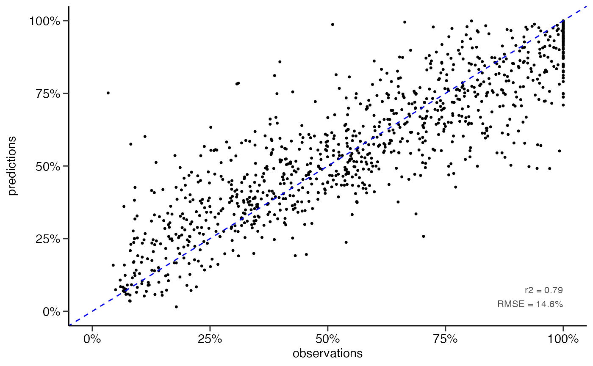

xgboost
Mathias Riechel, Michael Rustler
Source:vignettes/prediction_xgboost.Rmd
prediction_xgboost.RmdInstall R Package
# Enable KWB-R universe
options(repos = c(
kwbr = 'https://kwb-r.r-universe.dev',
CRAN = 'https://cloud.r-project.org'))
# Install R package "dwc.wells"
install.packages('dwc.wells', dependencies = TRUE)Input Dataset
library(dwc.wells)
library(tidymodels)
#> ── Attaching packages ────────────────────────────────────── tidymodels 1.0.0 ──
#> ✔ broom 1.0.1 ✔ recipes 1.0.2
#> ✔ dials 1.0.0 ✔ rsample 1.1.0
#> ✔ dplyr 1.0.10 ✔ tibble 3.1.8
#> ✔ ggplot2 3.3.6 ✔ tidyr 1.2.1
#> ✔ infer 1.0.3 ✔ tune 1.0.1
#> ✔ modeldata 1.0.1 ✔ workflows 1.1.0
#> ✔ parsnip 1.0.2 ✔ workflowsets 1.0.0
#> ✔ purrr 0.3.5 ✔ yardstick 1.1.0
#> ── Conflicts ───────────────────────────────────────── tidymodels_conflicts() ──
#> ✖ purrr::discard() masks scales::discard()
#> ✖ dplyr::filter() masks stats::filter()
#> ✖ dplyr::lag() masks stats::lag()
#> ✖ recipes::step() masks stats::step()
#> • Learn how to get started at https://www.tidymodels.org/start/
df <- dwc.wells::model_data_reduced
str(df)
#> 'data.frame': 6308 obs. of 27 variables:
#> $ Qs_rel : num 100 97.8 75.1 78.5 52.2 ...
#> $ well_id : int 548676 548676 548676 548676 548676 548676 548676 548676 548676 548676 ...
#> $ well_age_years : num 0 23.2 29.3 29.5 35 ...
#> $ construction_year : num 1970 1970 1970 1970 1970 1970 1970 1970 1970 1970 ...
#> $ screen_material : Factor w/ 6 levels "3fe9575b","5bad81ff",..: 2 2 2 2 2 2 2 2 2 2 ...
#> $ diameter : num 300 300 300 300 300 300 300 300 300 300 ...
#> $ drilling_method : Factor w/ 6 levels "213a7eba","53686f99",..: 3 3 3 3 3 3 3 3 3 3 ...
#> $ admissible_discharge : num 176 176 176 176 176 176 176 176 176 176 ...
#> $ operational_start.Qs : num 39.1 39.1 39.1 39.1 39.1 ...
#> $ aquifer_coverage : Factor w/ 5 levels "79316b83","90351ceb",..: 1 1 1 1 1 1 1 1 1 1 ...
#> $ W_static.sd : num 0.766 0.766 0.766 0.766 0.766 ...
#> $ surface_water.distance: Factor w/ 8 levels "2af55c68","2cfd2a47",..: 2 2 2 2 2 2 2 2 2 2 ...
#> $ n_rehab : int 0 1 1 2 2 3 3 4 4 4 ...
#> $ time_since_rehab_years: num 0 0.0411 6.193 0.0794 5.5524 ...
#> $ volume_m3_d.mean : num 1203 1203 1203 1203 1203 ...
#> $ volume_m3_d.cv : num 1.29 1.29 1.29 1.29 1.29 ...
#> $ quality.EC : num 824 824 824 824 824 ...
#> $ quality.DO : num 0.235 0.235 0.235 0.235 0.235 0.235 0.235 0.235 0.235 0.235 ...
#> $ quality.Temp : num 11.7 11.7 11.7 11.7 11.7 11.7 11.7 11.7 11.7 11.7 ...
#> $ quality.pH : num 7.4 7.4 7.4 7.4 7.4 7.4 7.4 7.4 7.4 7.4 ...
#> $ quality.Redox : num 86 86 86 86 86 86 86 86 86 86 ...
#> $ quality.Fe_tot : num 1.9 1.9 1.9 1.9 1.9 1.9 1.9 1.9 1.9 1.9 ...
#> $ quality.Mn : num 0.24 0.24 0.24 0.24 0.24 0.24 0.24 0.24 0.24 0.24 ...
#> $ quality.NO3 : num 0.1 0.1 0.1 0.1 0.1 0.1 0.1 0.1 0.1 0.1 ...
#> $ quality.PO4 : num 0.966 0.966 0.966 0.966 0.966 ...
#> $ quality.SO4 : num 94 94 94 94 94 94 94 94 94 94 ...
#> $ quality.TSS : num 4.1 4.1 4.1 4.1 4.1 4.1 4.1 4.1 4.1 4.1 ...Resampling
set.seed(1)
resampled_dataset <- dwc.wells::resample_dataset(
model_data = df,
method = "random",
prop = 0.8
)
df_training <- resampled_dataset$training
df_test <- resampled_dataset$testingRegression
Hyperparameter Tuning
# Hyperparameter tuning --------------------------------------------------------
# specify model
xgb_model <- parsnip::boost_tree(
trees = 500,
tree_depth = tune::tune(), ## model complexity
min_n = tune::tune(), ## model complexity
loss_reduction = tune::tune(), ## model complexity
sample_size = tune::tune(), ## randomness
mtry = tune::tune(), ## randomness
learn_rate = tune::tune(), ## step size
) %>%
parsnip::set_engine("xgboost") %>%
parsnip::set_mode("regression")
# set up workflow
xgb_wf <- workflows::workflow() %>%
workflows::add_formula(Qs_rel ~ .) %>%
workflows::add_model(xgb_model)
# hyperparameter sampling v1
# xgb_grid <- dials::grid_random(dials::tree_depth(),
# dials::min_n(),
# dials::loss_reduction(),
# sample_size = dials::sample_prop(),
# dials::finalize(dials::mtry(), df_training),
# dials::learn_rate(range = c(0.01, 0.1),
# trans = NULL),
# size = 1000)
# hyperparameter sampling v2
xgb_grid <- dials::grid_latin_hypercube(
dials::tree_depth(),
dials::min_n(),
dials::loss_reduction(),
sample_size = dials::sample_prop(),
dials::finalize(dials::mtry(), df_training),
dials::learn_rate(),
size = 500
)
# define cross validation procedure
cv_folds <- rsample::vfold_cv(df_training, v = 5)
# set up random grid with 20 combinations for first screening
doParallel::registerDoParallel()
# test different hyperparameters via cross validation on training data
set.seed(234)
xgb_tuning <- tune::tune_grid(
xgb_wf,
resamples = cv_folds,
grid = xgb_grid,
control = tune::control_grid(save_pred = TRUE)
)
# get assessment metrics
metrics <- tune::collect_metrics(xgb_tuning)
dwc.wells::save_data(metrics,
path = getwd(),
filename = "metrics_tuning_xgb_random_resampling")
# visualise results
metrics %>%
#filter(learn_rate > 0.01) %>%
dplyr::filter(.metric == "rmse") %>%
dplyr::select(mean, min_n, mtry, tree_depth, learn_rate, loss_reduction, sample_size) %>%
tidyr::pivot_longer(c(min_n, mtry, tree_depth, learn_rate, loss_reduction, sample_size),
values_to = "value",
names_to = "parameter") %>%
ggplot2::ggplot(ggplot2::aes(value, mean, color = parameter)) +
ggplot2::geom_point(show.legend = FALSE, size = 0.5) +
ggplot2::facet_wrap(~parameter, scales = "free") +
ggplot2::labs(x = NULL, y = "RMSE [%]") +
sema.berlin.utils::my_theme()
ggplot2::ggsave("xgb_regression_hyperparameter_tuning_plot_random_resampling_1000_v2.png",
width = 8,
height = 4,
dpi = 600)
# after example from https://juliasilge.com/blog/xgboost-tune-volleyball/
}Best-Fit Model
# Specify model ----------------------------------------------------------------
xgb_model <- parsnip::boost_tree(mtry = 6,
min_n = 10,
trees = 500,
tree_depth = 7,
loss_reduction = 10,
learn_rate = 0.1,
sample_size = 0.7) %>%
parsnip::set_engine("xgboost",
nthread = parallel::detectCores()) %>%
parsnip::set_mode("regression")
# Model training and assessment (regression) -----------------------------------
# Train model
set.seed(26)
xgb_fit <- xgb_model %>% parsnip::fit(Qs_rel ~ ., data = df_training)
#usethis::use_data(xgb_fit, compress = "xz", overwrite = TRUE)
# Make predictions
predictions <- predict(xgb_fit, df_test)
# Evaluate model performance
df_pred <- df_test %>%
dplyr::select(Qs_rel) %>%
dplyr::bind_cols(predictions)
yardstick::rmse(df_pred, truth = Qs_rel, estimate = .pred)
#> # A tibble: 1 × 3
#> .metric .estimator .estimate
#> <chr> <chr> <dbl>
#> 1 rmse standard 14.6
yardstick::rsq(df_pred, truth = Qs_rel, estimate = .pred)
#> # A tibble: 1 × 3
#> .metric .estimator .estimate
#> <chr> <chr> <dbl>
#> 1 rsq standard 0.788
# scatter plot
dwc.wells::scatterplot(df_pred,
lines_80perc = FALSE,
alpha = 1,
pointsize = 0.9)
#> Warning: Removed 242 rows containing missing values (geom_point).
ggplot2::ggsave("scatterplot_xgb_numeric.png",
dpi = 600,
width = 3.5,
height = 3)
#> Warning: Removed 242 rows containing missing values (geom_point).Prediction
sim_data <- dwc.wells::prepare_simulation_donothing_df(
model_data = df,
rehabs = dwc.wells::rehabs,
operational_start = dwc.wells::operational_start,
sim_interval = 1L,
sim_period = 60L,
sim_reference_date = Sys.Date() # to fill 'type` with `past`/`future`
)
str(sim_data)
#> tibble [60,634 × 28] (S3: tbl_df/tbl/data.frame)
#> $ well_id : int [1:60634] 40 40 40 40 40 40 40 40 40 40 ...
#> $ sim_date : Date[1:60634], format: "2016-05-11" "2017-05-11" ...
#> $ type : chr [1:60634] "past" "past" "past" "past" ...
#> $ well_age_years : num [1:60634] 0 1 2 3 4 5 6 7 8 9 ...
#> $ n_rehab : num [1:60634] 1 1 1 1 1 1 1 1 1 1 ...
#> $ time_since_rehab_years: num [1:60634] 0 0.999 1.999 2.998 4 ...
#> $ construction_year : num [1:60634] 2015 2015 2015 2015 2015 ...
#> $ screen_material : Factor w/ 6 levels "3fe9575b","5bad81ff",..: 2 2 2 2 2 2 2 2 2 2 ...
#> $ diameter : num [1:60634] 300 300 300 300 300 300 300 300 300 300 ...
#> $ drilling_method : Factor w/ 6 levels "213a7eba","53686f99",..: 2 2 2 2 2 2 2 2 2 2 ...
#> $ admissible_discharge : num [1:60634] 143 143 143 143 143 ...
#> $ operational_start.Qs : num [1:60634] 33.9 33.9 33.9 33.9 33.9 ...
#> $ aquifer_coverage : Factor w/ 5 levels "79316b83","90351ceb",..: 1 1 1 1 1 1 1 1 1 1 ...
#> $ W_static.sd : num [1:60634] 1.1 1.1 1.1 1.1 1.1 ...
#> $ surface_water.distance: Factor w/ 8 levels "2af55c68","2cfd2a47",..: 1 1 1 1 1 1 1 1 1 1 ...
#> $ volume_m3_d.mean : num [1:60634] 1946 1946 1946 1946 1946 ...
#> $ volume_m3_d.cv : num [1:60634] 0.91 0.91 0.91 0.91 0.91 ...
#> $ quality.EC : num [1:60634] 605 605 605 605 605 605 605 605 605 605 ...
#> $ quality.DO : num [1:60634] 0.45 0.45 0.45 0.45 0.45 0.45 0.45 0.45 0.45 0.45 ...
#> $ quality.Temp : num [1:60634] 12.4 12.4 12.4 12.4 12.4 12.4 12.4 12.4 12.4 12.4 ...
#> $ quality.pH : num [1:60634] 7.5 7.5 7.5 7.5 7.5 7.5 7.5 7.5 7.5 7.5 ...
#> $ quality.Redox : num [1:60634] 115 115 115 115 115 115 115 115 115 115 ...
#> $ quality.Fe_tot : num [1:60634] 1.95 1.95 1.95 1.95 1.95 1.95 1.95 1.95 1.95 1.95 ...
#> $ quality.Mn : num [1:60634] 0.093 0.093 0.093 0.093 0.093 0.093 0.093 0.093 0.093 0.093 ...
#> $ quality.NO3 : num [1:60634] 0.1 0.1 0.1 0.1 0.1 0.1 0.1 0.1 0.1 0.1 ...
#> $ quality.PO4 : num [1:60634] 0.844 0.844 0.844 0.844 0.844 ...
#> $ quality.SO4 : num [1:60634] 85 85 85 85 85 85 85 85 85 85 ...
#> $ quality.TSS : num [1:60634] 3.45 3.45 3.45 3.45 3.45 3.45 3.45 3.45 3.45 3.45 ...
predictions <- dwc.wells::get_predictions(model = xgb_fit,
sim_data = sim_data)
### Number of wells used for prediction
length(unique(predictions$well_id))
#> [1] 994
if(FALSE) {
# plot 1: all predictions as points, one plot per well
pdff <- "predictions_do-nothing_points_per_well.pdf"
kwb.utils::preparePdf(pdff)
dwc.wells::plot_predictions_points_per_well(predictions = predictions)
kwb.utils::finishAndShowPdf(pdff)
# plot 2: all predictions as individual lines in one plot ----------------------
p2 <- ggplot(predictions, aes(x = well_age_years, y = Qs_rel, col = type, group = well_id)) +
geom_line(alpha = 0.05) +
scale_x_continuous(limits = c(0, 40)) +
scale_y_continuous(limits = c(0, 100)) +
labs(x = "Well age [yrs]", y = "Specific capacity [%]") +
sema.berlin.utils::my_theme(legend.position = "none")
p2
getwd()
ggsave("xgb_plot_multi_line_betriebsbereit_bis_40_past_future.png", dpi = 600, width = 4.5, height = 3)
# plot mean prediction vs. confidence interval ---------------------------------
p3 <- ggplot(predictions, aes(x = well_age_years, y = Qs_rel)) +
scale_x_continuous(limits = c(0, 40)) +
scale_y_continuous(limits = c(0, 100)) +
labs(x = "Well age [yrs]", y = "Specific capacity [%]") +
# stat_summary(geom = "ribbon", fun.data = mean_cl_normal,
# fun.args = list(conf.int = 0.9999), fill = "lightblue") +
stat_summary(geom = "ribbon", fun.data = "median_hilow", fill = "lightblue") +
stat_summary(geom = "line", fun = mean) +
sema.berlin.utils::my_theme()
p3
ggsave("xgb_plot_mean_line_and_95_conf_int_betriebsbereit_bis_40.png", p3, dpi = 600, width = 4.5, height = 3)
# plot 4: predictions for two selected wells with colors for past / future -----
p4 <- ggplot(filter(predictions, well_id %in% c(1161, 5837)),
aes(x = well_age_years, y = Qs_rel, col = type)) +
geom_line(alpha = 0.5) +
scale_x_continuous(limits = c(0, 40)) +
scale_y_continuous(limits = c(NA, 100), breaks = scales::pretty_breaks(6)) +
facet_wrap(~well_id) +
labs(x = "Well age [yrs]", y = "Specific capacity [%]") +
sema.berlin.utils::my_theme(legend.position = "none")
p4
ggsave("xgb_plot_multi_line_betriebsbereit_bis_40_past_future_2wells.png",
dpi = 600, width = 6, height = 3)
# plot predictions vs. observations for two selected wells ---------------------
df <- model_data %>% filter(well_id %in% c(1161, 5837)) %>%
mutate(n_rehab = as.factor(n_rehab))
df_pred <- predictions %>% filter(well_id %in% c(1161, 5837))
p5 <- ggplot2::ggplot(df, ggplot2::aes(x = well_age_years,
y = Qs_rel, col = n_rehab)) +
ggplot2::geom_point() +
#ggplot2::geom_line(lty = 2) +
#ggplot2::geom_line(ggplot2::aes(group = "all")) +
ggplot2::geom_line(data = df_pred, aes(x = well_age_years,
y = Qs_rel,
col = NULL,
lty = 'unity line'
), alpha = 0.5) +
scale_x_continuous(limits = c(0, 40)) +
scale_y_continuous(limits = c(NA, 120), breaks = scales::pretty_breaks(6), oob = scales::rescale_none) +
ggplot2::scale_color_manual(values = rev(RColorBrewer::brewer.pal(length(levels(df$n_rehab)), "RdYlGn"))) +
#ggplot2::scale_color_manual(values = rev(scales::hue_pal()(length(levels(df$n_rehab))))) +
sema.berlin.utils::my_theme(legend.position = "top") +
ggplot2::guides(color = ggplot2::guide_legend(nrow = 1)) +
ggplot2::labs(color = "observations (by number of rehabs):",
x = "Well age [yrs]",
y = "Specific capacity [%]",
linetype = "predictions") +
facet_wrap(~well_id, labeller = purrr::partial(label_both, sep = ": "))
p5
ggsave("plot_observations_vs_predictions_xgboost_v3.png", dpi = 600, width = 9, height = 4)
# plot predictions vs. observations for one selected well ----------------------
df <- model_data %>% filter(well_id %in% c(5837)) %>%
mutate(n_rehab = as.factor(n_rehab))
df_pred <- predictions %>% filter(well_id %in% c(5837))
p6 <- ggplot2::ggplot(df, ggplot2::aes(x = well_age_years,
y = Qs_rel, col = n_rehab)) +
ggplot2::geom_point() +
ggplot2::geom_line(ggplot2::aes(group = "all")) +
ggplot2::geom_line(data = df_pred, aes(x = well_age_years,
y = Qs_rel,
col = NULL,
lty = 'unity line'
), alpha = 0.5) +
scale_x_continuous(limits = c(0, 40)) +
scale_y_continuous(limits = c(NA, 120), breaks = scales::pretty_breaks(6), oob = scales::rescale_none) +
ggplot2::scale_color_manual(values = rev(RColorBrewer::brewer.pal(length(levels(df$n_rehab)), "RdYlGn"))) +
#ggplot2::scale_color_manual(values = rev(scales::hue_pal()(length(levels(df$n_rehab))))) +
sema.berlin.utils::my_theme() +
#ggplot2::guides(color = ggplot2::guide_legend(nrow = 1)) +
ggplot2::labs(color = "observations\n(by number of rehabs):",
x = "Well age [yrs]",
y = "Specific capacity [%]",
linetype = "predictions") +
facet_wrap(~well_id, labeller = purrr::partial(label_both, sep = ": "))
p6
ggplot2::ggsave("plot_observations_vs_predictions_xgboost_v3b.png",
dpi = 600,
width = 6,
height = 3.5)
}Classification
# classification performance ---------------------------------------------------
# classify Qs data
df_pred <- df_pred %>%
dplyr::mutate(Qs_rel_class = dwc.wells::classify_Qs(Qs_rel),
.pred_class = dwc.wells::classify_Qs(.pred))
# confusion matrix
matrix <- yardstick::conf_mat(df_pred,
truth = Qs_rel_class,
estimate = .pred_class)
matrix
#> Truth
#> Prediction low high
#> low 725 103
#> high 45 391
# performance metrics
metrics <- summary(matrix)
metrics
#> # A tibble: 13 × 3
#> .metric .estimator .estimate
#> <chr> <chr> <dbl>
#> 1 accuracy binary 0.883
#> 2 kap binary 0.749
#> 3 sens binary 0.942
#> 4 spec binary 0.791
#> 5 ppv binary 0.876
#> 6 npv binary 0.897
#> 7 mcc binary 0.752
#> 8 j_index binary 0.733
#> 9 bal_accuracy binary 0.867
#> 10 detection_prevalence binary 0.655
#> 11 precision binary 0.876
#> 12 recall binary 0.942
#> 13 f_meas binary 0.907
dwc.wells::save_data(matrix,
path = getwd(),
filename = "xgb_numeric_to_class_matrix_split80",
formats = "RData")